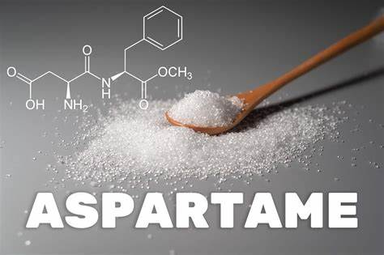
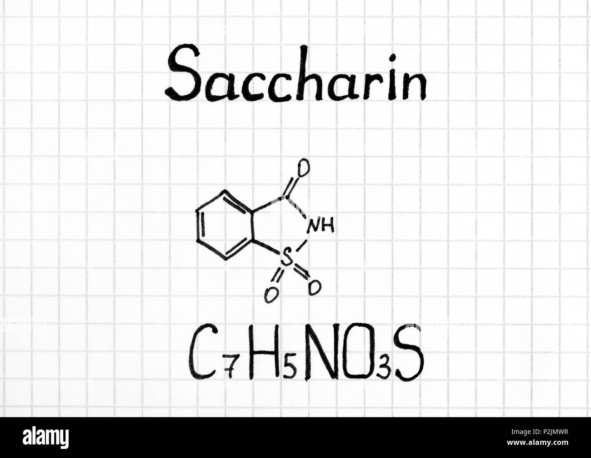
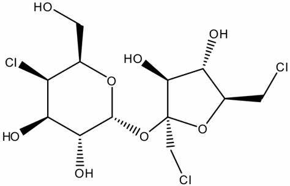
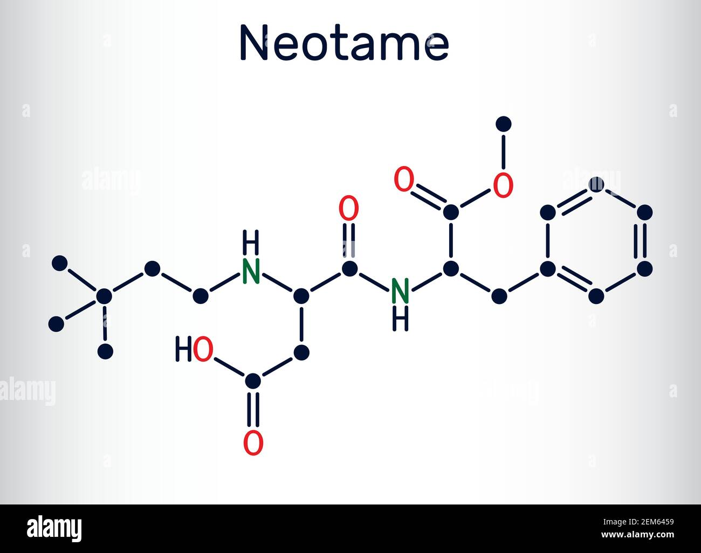

artficial sweeteners
what are artificial sweeteners
Artificial sweeteners are sugar substitutes that provide sweetness without the calories of regular sugar. They are widely used in food and beverages, especially for people managing diabetes or weight.
Examples & Formulas
Stevia Stevia is a natural, calorie-free sweetener derived from the leaves of the Stevia plant.
Aspartame (C₁₄H₁₈N₂O₅) – Used in diet sodas, chewing gum, and sugar-free desserts.


Saccharin (C₇H₅NO₃S) – Found in toothpaste, soft drinks, and baked goods.

Sucralose (C₁₂H₁₉Cl₃O₈) – Used in sugar-free candies, dairy products, and protein bars.

Acesulfame Potassium (C₄H₄KNO₄S) – Common in soft drinks and baked goods.

Neotame is created by modifying aspartame for enhanced sweetness.

Manufacturing Process
Artificial sweeteners are synthesized through chemical reactions:
Aspartame is made by combining aspartic acid and phenylalanine.
Saccharin is produced from toluene derivatives.
Sucralose is derived from sucrose by replacing hydroxyl groups with chlorine atoms.
Acesulfame Potassium is synthesized using acetoacetic acid and potassium.
Neotame is created by modifying aspartame for enhanced sweetness.
Advantages
Low-calorie alternative for weight management.
Suitable for diabetics as they don’t raise blood sugar levels.
Long shelf life compared to natural sugar.
Does not cause tooth decay like regular sugar.
Disadvantages
Artificial taste that some people dislike.
Potential health concerns (e.g., saccharin was once linked to cancer in rats).
Digestive issues in some individuals.
May increase cravings for sweet foods.